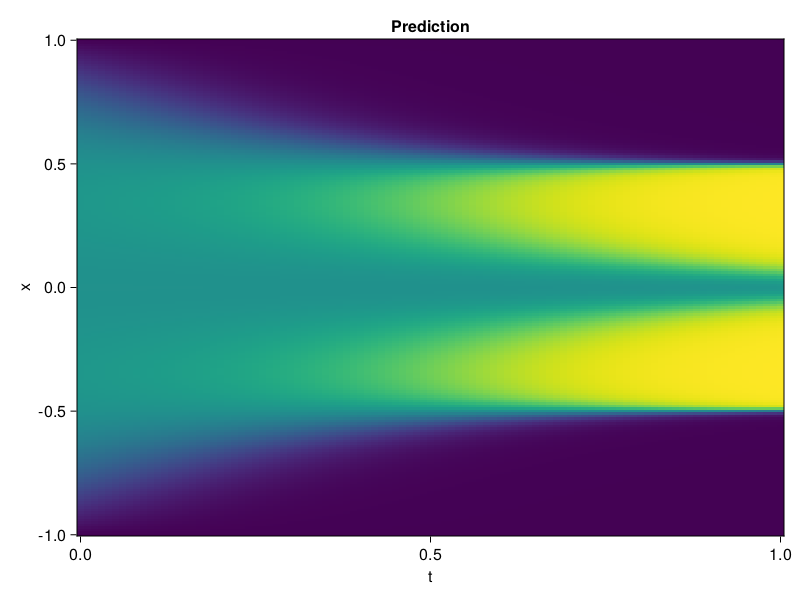

Allen-Cahn Equation with Sequential Training
In this tutorial we are going to solve the Allen-Cahn equation with periodic boundary condition from $t=0$ to $t=1$. The traning process is split into four stages, namely $t\in [0,0.25]$, $t\in [0.0,0.5]$, $t\in [0.0,0.75]$ and $t\in [0.0, 1.0]$.
using ModelingToolkit, IntervalSets
using Sophon
using Optimization, OptimizationOptimJL
@parameters t, x
@variables u(..)
Dₓ = Differential(x)
Dₓ² = Differential(x)^2
Dₜ = Differential(t)
eq = Dₜ(u(x, t)) - 0.0001 * Dₓ²(u(x, t)) + 5 * u(x,t) * (abs2(u(x,t)) - 1.0) ~ 0.0
domain = [x ∈ -1.0..1.0, t ∈ 0.0..0.25]
bcs = [u(x,0) ~ x^2 * cospi(x),
u(-1,t) ~ u(1,t)]
@named allen = PDESystem(eq, bcs, domain, [x, t], [u(x, t)])\[ \begin{align} - 0.0001 \frac{\mathrm{d}^{2}}{\mathrm{d}x^{2}} u\left( x, t \right) + 5 \left( -1.0 + \left|u\left( x, t \right)\right|^{2} \right) u\left( x, t \right) + \frac{\mathrm{d}}{\mathrm{d}t} u\left( x, t \right) =& 0.0 \end{align} \]
Then we define the neural net, the sampler, and the training strategy.
chain = FullyConnected(2, 1, tanh; hidden_dims=16, num_layers=4)
pinn = PINN(chain)
sampler = QuasiRandomSampler(500, (300, 100))
strategy = NonAdaptiveTraining(1, (50, 1))
prob = Sophon.discretize(allen, pinn, sampler, strategy)OptimizationProblem. In-place: true
u0: ComponentVector{Float64}(layer_1 = (weight = [-1.7908341884613037 1.3537355661392212; 1.0876344442367554 1.2073520421981812; … ; -0.19740936160087585 -1.0271955728530884; 0.9020973443984985 -1.2568838596343994], bias = [0.0; 0.0; … ; 0.0; 0.0;;]), layer_2 = (weight = [-0.1794596016407013 -0.09664547443389893 … 0.034968435764312744 0.5332885980606079; -0.3583340048789978 0.0015536498976871371 … 0.5909830927848816 -0.09804176539182663; … ; -0.10694210976362228 0.6814053654670715 … 0.709926962852478 0.34600356221199036; -0.6743057370185852 0.19356891512870789 … -0.0921848863363266 -0.21061758697032928], bias = [0.0; 0.0; … ; 0.0; 0.0;;]), layer_3 = (weight = [-0.7038842439651489 0.5118615031242371 … -0.4738488495349884 0.7204067707061768; -0.19080771505832672 0.026860015466809273 … -0.44179412722587585 -0.5650514960289001; … ; -0.28416693210601807 0.566425621509552 … 0.11975853890180588 -0.3379272520542145; 0.286359041929245 -0.17370234429836273 … -0.353779137134552 0.6789708733558655], bias = [0.0; 0.0; … ; 0.0; 0.0;;]), layer_4 = (weight = [-0.01698080264031887 -0.5964779853820801 … -0.5868400931358337 0.22781717777252197; 0.23793108761310577 0.4409160912036896 … -0.6827892661094666 -0.14076675474643707; … ; -0.13441820442676544 0.676694929599762 … 0.6387726664543152 0.6621415019035339; -0.14163713157176971 0.5202468633651733 … -0.39603549242019653 -0.11621695011854172], bias = [0.0; 0.0; … ; 0.0; 0.0;;]), layer_5 = (weight = [-0.1705283671617508 -0.4641505479812622 … -0.07261237502098083 -0.2200007438659668], bias = [0.0;;]))We solve the equation sequentially in time.
function train(allen, prob, sampler, strategy)
bfgs = BFGS()
res = Optimization.solve(prob, bfgs; maxiters=2000)
for tmax in [0.5, 0.75, 1.0]
allen.domain[2] = t ∈ 0.0..tmax
data = Sophon.sample(allen, sampler)
prob = remake(prob; u0=res.u, p=data)
res = Optimization.solve(prob, bfgs; maxiters=2000)
end
return res
end
res = train(allen, prob, sampler, strategy)u: ComponentVector{Float64}(layer_1 = (weight = [-1.7855135929554968 0.9356845226222359; 2.0142097177149414 1.3819486815766064; … ; -0.35620588782142953 -1.3957728406274383; -0.01741168617685316 -0.9658423997082983], bias = [-1.4782240707828316; -2.4393708733892545; … ; -0.1373695921675542; 1.3032613727842686;;]), layer_2 = (weight = [-0.19027710878870366 -0.06870741417874102 … 0.09225062852870851 0.8529370901162573; -1.016704972114126 -0.899717418875853 … 0.7362199926058178 0.6151520792464935; … ; 0.17725795626611104 0.6699737320410536 … 0.6187428624083761 0.2988856040913732; -1.2729108095308215 0.9428288080500211 … 0.0655855980780753 -0.03764580342306762], bias = [0.12883851992392517; -0.23432880008946189; … ; 0.3074212615540863; -0.19926055114993071;;]), layer_3 = (weight = [-0.5752259433748305 0.4266201583699867 … -0.20381924246532254 1.008474405985899; -0.14790092193375384 -0.13807991021302962 … -0.5337492428543852 -1.0373837477818157; … ; -0.07579938513018539 0.8089980869740268 … 0.029592425615575662 0.06388606302085738; 0.3220673458769815 -0.29299112583292386 … -0.5390422180085875 0.68822352157284], bias = [0.02429678153018699; -0.506835436237162; … ; 0.06307253313990671; 0.23878223569955717;;]), layer_4 = (weight = [-0.16645861729598235 -0.5728875933511924 … -0.45412347245004536 0.3564410033485705; 0.6083633203209879 0.19089817764757658 … -0.5956795974039394 -0.2389315442957912; … ; -0.039812651121205314 0.5507632108452389 … 0.5020010683492955 0.6896838492603679; -0.26508267806865554 0.2197309103925643 … -0.33263569887788513 0.24098527067936001], bias = [0.058424169774919474; -0.1564384690388932; … ; -0.19542681960179417; -0.10614286569482205;;]), layer_5 = (weight = [-0.036173100616331215 -0.763089259033639 … -0.01452998912490424 -0.2796237997620916], bias = [-0.4557125876740046;;]))Let's plot the result.
using CairoMakie
phi = pinn.phi
xs, ts = [infimum(d.domain):0.01:supremum(d.domain) for d in allen.domain]
axis = (xlabel="t", ylabel="x", title="Prediction")
u_pred = [sum(pinn.phi([x, t], res.u)) for x in xs, t in ts]
fig, ax, hm = heatmap(ts, xs, u_pred', axis=axis)